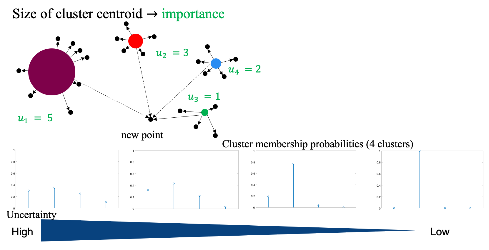

|  |
Abstract: We study the problem of training machine learning models incrementally with batches of samples annotated with noisy oracles. We select each batch of samples that are important and also diverse via clustering and importance sampling. More importantly, we incorporate model uncertainty into the sampling probability to compensate poor estimation of the importance scores when the training data is too small to build a meaningful model. Experiments on benchmark image classification datasets (MNIST, SVHN, CIFAR10, and EMNIST) show improvement over existing active learning strategies. We introduce an extra denoising layer to deep networks to make active learning robust to label noises and show significant improvements.
[paper] [code]